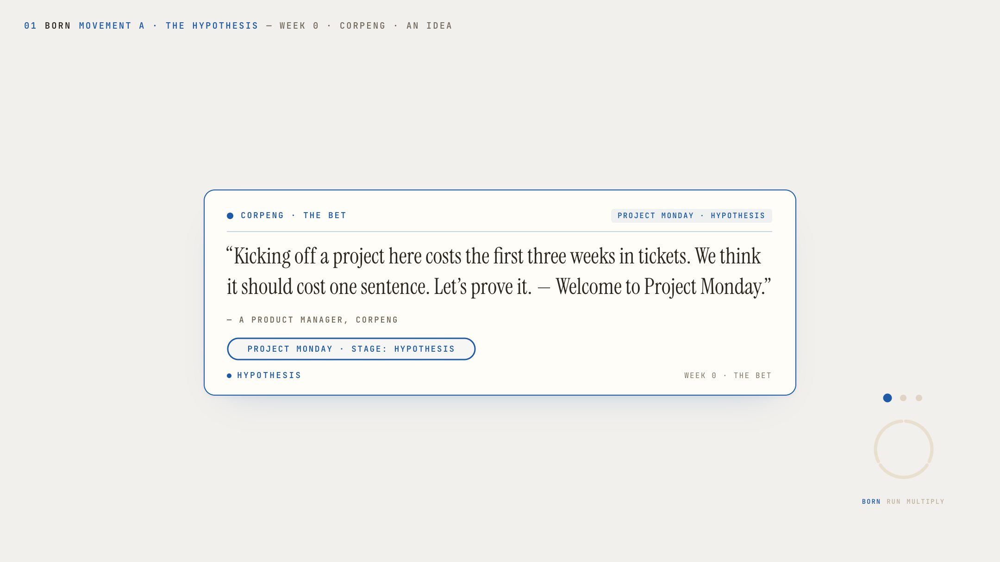
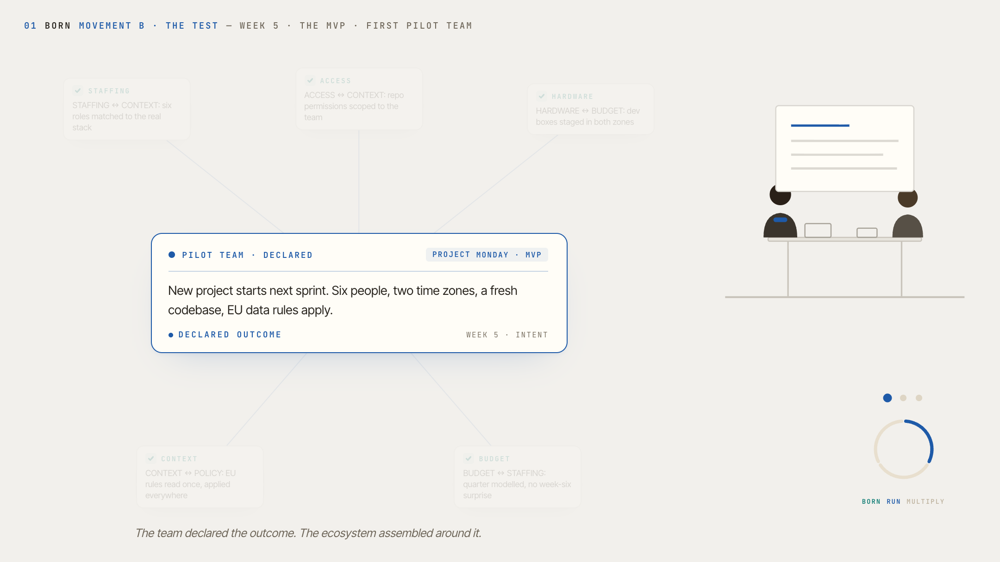
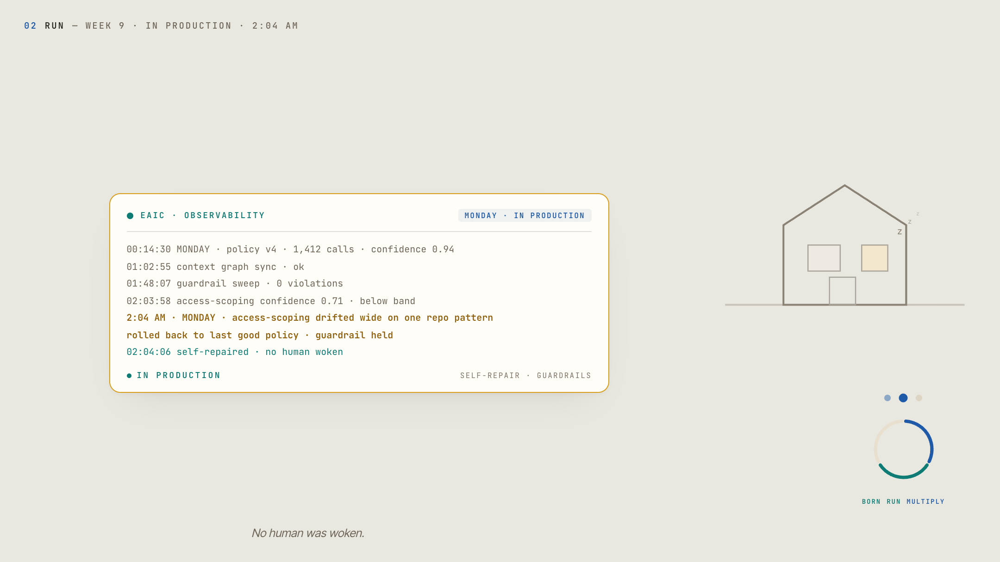
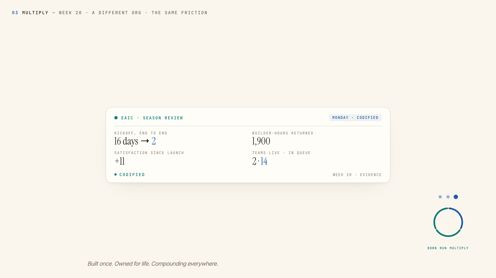

“The world judges Google’s AI by its products. Googlers judge it by their Tuesday.”
An enterprise compounds or degrades based on how its human-AI collaboration is designed.
CorpEng is Google for Googlers. This artifact is a point of view on how an internal AI organization moves a company from bolt-ons to outcomes — and keeps it moving, for the life of every capability it ships.
The role description has already chosen its direction: away from AI as “bolt-ons for isolated tasks,” toward “agentic AI that drives comprehensive outcomes” and processes “fundamentally redesigned from the ground up.” This page takes that choice seriously enough to sharpen it. Enterprise AI operates at one of three altitudes — and only one of them compounds.
A smarter search bar. A summarize button. An assistant per tool. Tasks get faster; processes go untouched. And the human is still the glue: the integration layer between a dozen interfaces, spending judgment on coordination instead of decisions.
AI moves inside the process. Fewer clicks, smoother handoffs. The process survives, and its costs compound quietly underneath the convenience.
The process is rebuilt around the outcome it exists to produce. Agents own the coordination. Humans own the calls that matter. And the half that vision decks skip: an outcome capability is owned for life — monitored, maintained, measured, and retired on purpose.
The only altitude that compoundsBolt-ons get demos. Platforms get operated.
Coordination. Context. Execution within guardrails. The watching — performance, drift, satisfaction — around the clock.
Priorities. Tradeoffs. Exceptions. Go/no-go. The calls that make it Google.
What follows is the life of one internal capability — MONDAY, an agent that stands up a new project from a single declared outcome — from stated hypothesis to company-wide compounding. The workflow it serves is deliberately interchangeable — because at this altitude, the workflow is never the point. The lifecycle is.




Two movements. The Hypothesis: a CorpEng PM states the bet. Kicking off a project costs the first three weeks in tickets; it should cost one sentence. Project Monday is born. The Test: the leverage is found by sitting with the people who do the work, the process is redesigned ground-up, and the 0→1 agent ships as an MVP. A first pilot team declares an outcome once. Staffing, access, budget, and context assemble around it, agents negotiating with agents, while the humans plan the actual work and make the calls that are theirs. The badge quietly drops the word “Project”: a project has graduated into a capability.
The team declared the outcome. The ecosystem assembled around it.The beat most vision artifacts skip, and the one an IT organization checks for. Observability on every agent action. MONDAY’s access-scoping drift caught at 2:04 AM and repaired inside guardrails; the one change that needs judgment waits for a human morning, not a human emergency. And the layer listens: a satisfaction dip surfaces in the signal before the first complaint is ever filed.
Uptime is table stakes. This layer also listens.MONDAY is codified and adopted by a second team in days, not months, with a consistent experience. Then measurement earns its keep: what compounded, what got retired, what returned hours to builders. Kickoff time itself fell from 16 days to 2, the bet from the cold open, paid in full. The scale-or-stop decision that follows is made by a human, on evidence the ecosystem assembled.
Built once. Owned for life. Compounding everywhere.This role’s responsibilities describe an operating loop. It happens to be one that already exists — published, live at real URLs, and in daily production for two and a half years.
The mandate and the methodology are the same diagram.
Ambient awareness of project, team, and permissions across every internal surface; agents arrive already knowing.
Verified agents act within pre-agreed guardrails; humans own the exceptions and the calls that matter. Autonomy is a permission, not a default.
Google gave the world A2A, the open standard for agent-to-agent communication. The move here is not invention but adoption: make Google’s own protocol the internal default, and the “scalable ecosystem with consistent user experience” falls out of the standard. Google for Googlers, applied to Google’s own standards.
Performance, adoption, and satisfaction monitored as production signals. Sentiment is telemetry too.
Privacy, security, and ethics as structural constraints, not review gates.
From tools deployed → processes redesigned.Accepted when: a legacy process is retired, not wrapped.
From usage tracked → outcomes measured.Accepted when: adoption metrics can answer “what no longer has to happen?”
From pilots launched → capabilities operated.Accepted when: every shipped agent has an owner, an SLO, and a satisfaction signal — for life.
Enterprise AI transformation fails two ways: too timid (bolt-ons that flatter the org chart) or too reckless (autonomy without guardrails that spends trust faster than it earns capability). The path between them isn’t a compromise. It’s a discipline — a lifecycle, operated.
I’ve led exactly the team this role describes: a global PM team of 15 across three countries and time zones, rallied behind a shared mission. I’ve built reusable platform primitives inside an enterprise serving 78M+ monthly active users, where engagement design produced a 7x retention lift and sentiment became telemetry. And for the last two and a half years I’ve run a public, daily practice of human-AI collaboration — the operating loop above isn’t a proposal, it’s a publication record.
The most consequential enterprise AI transformation in the world is the one Google runs on itself. The companies that get this right won’t be the ones that deploy the most agents. They’ll be the ones whose people can feel their own capability compounding.
“Human capability compounds or degrades based on how the collaboration is designed.”